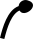
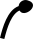

Papillons
Placez tous les papillons dans le diagramme.
Deux papillons peuvent être reliés par un trait si toutes les affirmations suivantes sont vraies :
- un des papillons a une antenne de plus que l'autre ;
- les deux papillons ont une aile (celle de droite ou celle de gauche) avec des taches identiques ;
- sur l'autre aile, il y a une tache en plus ou en moins, et les autres taches restent au même endroit.
 
